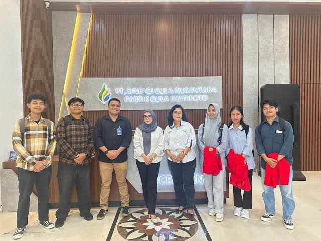

Internship
Program magang PT Sinergi Gula Nusantara bagi siswa/i SMK dan mahasiswa.




INTERNSHIP
Sebagai wujud komitmen dan kontribusi dalam menciptakan link and match antara dunia pendidikan dan dunia industri, PT SGN membuka kesempatan program magang bagi siswa/i SMK dan mahasiswa dari berbagai perguruan tinggi. Berikut kriteria peserta yang kami butuhkan:
- Memiliki motivasi dan minat tinggi terhadap bidang agroindustri gula dan bidang lainnya sesuai dengan penempatan Calon Peserta Magang.
- Disiplin, jujur, mampu bekerja sama dalam tim, serta dapat menjaga etika dan integritas selama menjalani program.
- Siap mengikuti peraturan perusahaan, termasuk jam kerja, etika berpakaian, dan tata tertib lingkungan kerja.
Persyaratan yang perlu disiapkan peserta untuk mendaftar:
- Surat Pengantar dari Universitas / Lembaga Pendidikan yang ditujukan kepada Direktur SDM TI
- Memiliki BPJS Ketenagakerjaan
- Melampirkan Proposal Magang
- Program Magang di PT SGN dikhususkan untuk mengganti SKS perkuliahan
- Link drive untuk tidak dibatasi saat melakukan input berkas.
Silakan klik tombol di bawah ini untuk melakukan pengajuan.